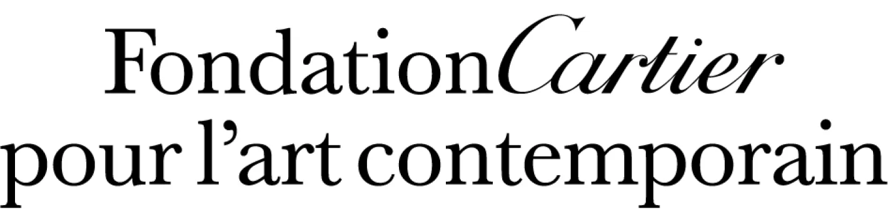
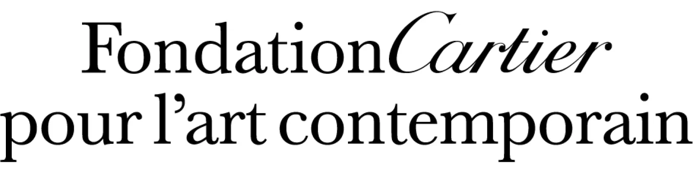

Jean Dubuffet
Jean Dubuffet Autoportrait
Jean Dubuffet (1901-1985) Peintre, sculpteur et plasticien, premier théoricien de l'« art brut », un art spontané, dépourvu de prétentions culturelles et ne répondant à aucune démarche intellectuelle. Dubuffet conçoit le peintre comme un passeur, à mi-chemin entre le philosophe et le poète, qui ouvre grandes les portes d'une pensée discontinue. Il privilégie la spontanéité de l'automatisme, d'où son style d'hachures d'aplats blancs, bleus, rouges et noirs.